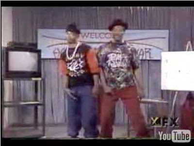

You get mo' money from the Gub-MINT! Whiz and Ice, key economic advisers to the Obama regime (as well as its predecessor).
In comoedia veritas est.
In comedy, the truth is found.
As a 23-year-old "social organizer" in Chicago, Barrack Obama had an encounter that should have changed the way he looked at politics, were he in the habit of serious reflective thought.
Deployed as an Alinskyite "change agent" to Chicago's South Side, Obama made the acquaintance of a redoubtable woman identified as "Sadie" in his first memoir, Dreams of My Father. Sadie is described as one of Obama's "staunchest supporters" during his street-level work in pursuing what he calls "redistributive change."
Sadie, like many other poor residents of Chicago's inner city, wanted to believe in the gospel of statist wealth redistribution, but was somewhat weary of the way her grievances were being leveraged by those in charge of Chicago's political spoils system.
So it likely was with a mixture of affection and despair that Sadie informed the eager and youthful future president: "Ain't nothing gonna change, Mr. Obama. We just gonna concentrate on saving our money so we can move outta here as fast as we can."

Now, if Obama had been blessed with an insightful older mentor -- say, the equivalent of Sean Connery's wizened Chicago beat cop Jimmy Malone from The Untouchables -- that stern but kindly sage would have italicized the meaning of that moment (in a voice flavored with an endearing, albeit ethnically dubious, Caledonian brogue, of course):
"Barry, my boy, the key to real change and upward mobility is not to seize the earnings of the industrious and thrifty and lavish them on the corrupt and profligate. It's to let people keep what they earn and use it to make life better for themselves and their children. That's not The Chicago Way -- but it is what we used to call The American Way. Here endeth the lesson."
But, as Charles Glass documents in a terrific overview of Obama's gestational years in the womb of the Chicago Machine, the would-be world-saver was both ideologically tone-deaf to the significance of such moments, and too beholden to the crass political establishment in the Big Onion, to change his trajectory.

And now that he's president, Obama -- acting on behalf of the entrenched kleptocratic clique in control of our economy -- is seeking to consummate "redistributive change" on a national basis by making it impossible for "Sadies" anywhere in the country to save what they earn and improve their circumstances.
To understand how this works, it's useful to turn to the oeuvre of the Wayans Brothers, producers of the early 1990s sketch comedy program In Living Color -- a program entirely uninhibited by politically correct etiquette.
Perhaps by virtue of their status as fully accredited minorities, they had what Seinfeld referred to as "total joke immunity"; this permitted them to examine, often in terms that would have made Rabelais blush, the comic-rich foibles of inner-city personality types. (Granted, the Wayans Brothers also inflicted Jim Carrey on the rest of us, and there are some things that simply cannot be forgiven.)
Not all of the Wayans Brothers' targets were treated scornfully. One recurring sketch featured the Hedleys, the "hardest-working West Indian family" in the country. In this small but very energetic Jamaican household it is considered a stain on the family honor for someone to be working for fewer than a half-dozen employers. A man is judged by the number of jobs he can juggle simultaneously. Even toddlers are required to seek paying work as soon as they develop marketable motor skills.
The Hedleys' catchphrase -- which is the defining feature of recurring sketch comedy -- is: "Hey, mon'-- I gotta go to work!"

One installment find the older daughter aglow over the prospect of her date with a new beau, a wonderful man who makes more than $100,000 a year. That radiance quickly disappears however, when her prospects are occluded by parental disapproval; you see, her boyfriend is a doctor, which means that he only has one job.
At the other end of the spectrum from the eccentric but admirable Hedleys we find "Whiz" and "Ice," a pair of petty crooks from the Hip-Hop anti-culture who consider themselves entrepreneurs and wealth-building consultants.
Where the immigrant Hedleys speak with a pronounced accent but precise, intelligible diction, the native-born Whiz and Ice converse in a patois -- sub-Ebonics-level English punctuated with spastic hand gestures -- that is perhaps a step above primal grunts and simian territorial antics. And while the Hedleys are busy earning money, Whiz and Ice are constantly exploring new ways to steal it. Their catchphrase will become quite obvious anon.
In the classic sketch depicting the "Homeboy Financial Seminar," Whiz and Ice peddle their new booklet, "How to Make MO' Money, Without Using YO' Money."
"Now, you might ask, `Whose money should I use?'" says Ice as he winds up for the sales pitch. "Well, who got mo' money than they know what to do wid'?"
"Da gub-MENT!" chimes in Whiz on cue.
With the practiced confidence of people who have lived their own advice, Ice and Whiz then give step-by-step instructions on how to use the Food Stamp program to leverage a six-pack of beer that costs $3.99 ("or even less, dependin' on the security system!" Whiz points out) into a $25 profit.
"Mo' money, mo' money, MO' MONEY!" they exclaim.
They then present a few videotaped testimonials from people who have worked their program successfully -- such as Anton "Boom-Boom" Geno, who made $45,000 in three weeks (before being locked away for 5-8 years); or Luther "Bighead" Jones, who scooped up $123,000 in six months (before being shot resisting arrest).
Whiz and Ice are creatures of pure consumption; they merely take and spend. The Hedleys are a caricature of upwardly mobile immigrants; all they do is work and save.
There is nothing new in this contrast; it's as old as Aesop's parable of the grasshopper and the ants. And, as the Wayans Brothers almost certainly understood as they created the characters, the allotment of such disparate character traits has nothing to do with melanin content or ethnicity (although culture undoubtedly plays a significant role).
Where industry and time preference are concerned, the Hedleys could have been immigrants from Korea, Latin America, India, the Pale of Settlement; they could have been 19th-Century sodbusters or 21st-century information entrepreneurs.
As for Whiz and Ice -- well, they could be considered creatures from the collective Id of post-Bubble Wall Street.
The difference between the small-scale scam described in the "Homeboy Financial Seminar" and the more exotic species of fraud that prospered during the most recent Federal Reserve-engineered boom is entirely a matter of scale.
The securitized debts peddled by the likes of Goldman Sachs were a bit like a street hustler's "flash roll" -- an apparently impressive wad of cash that turns out to be a single large-denomination bill wrapped around a handful of fives and ones with a large core of blank paper sheets. The chief difference between a "flash roll" and a Collateralized Debt Obligation, for example, is that the latter is trash all the way through.
In a larger and more uncomfortable sense, however, Whiz and Ice symbolize our entire debt-based consumer economy since August 1971, when the dollar became a pure fiat currency.
America's Empire of Debt, wrote William Bonner and Addison Wiggin in the indispensable book of that title (published on the eve of the unfolding financial melt-down) is "a vainglorious system of conceit, deceit, debt, and delusion.... Americans believe they can get rich by spending someone else's money.... They believe that foreign countries actually want to be invaded and taken over. They believe they can run up debt forever, and that their debt-laden houses are as good as money in the bank."
Or, to summarize the matter in a single pithy phrase, the entire system is based on the idea of "gettin' MO' money, wid-out usin' YO money."
One would think that the bloody debacles in Afghanistan and Iraq would disabuse Americans of the notion that other countries are simply aching to be invaded and occupied by the U.S. military. In similar fashion, one would think that the deepening horrors of our debt-based financial system would cause people to repent of the delusion that one can borrow his way to prosperity.
One would think this is the case. One would be wrong.

I'm tempted to say that the third eye is for "Inflation." (Sorry.)
Witness the unedifying spectacle of Barrack Obama peddling his administration's new subsidized mortgage refinancing program (no equity required, as long as your mortgage is backed by one of those twin exemplars of fiscal rectitude, Fannie Mae or Freddie Mac) with the unctuous pseudo-sincerity of a late-night infomercial pitchman.
But this is just one relatively small example of the Obama regime's grand design for recovery, which is to "rescue" the economy by confiscating -- through taxation or inflation -- all the wealth earned by the Hedleys and delivering it into the hands of the Whizzes and Ices of Wall Street.
How is this to be accomplished?
Simple:
Mo' money, mo' money, MO' MONEY! -- that is, the Federal Reserve's officially sanctioned counterfeit of the same.
How is the Zimbabwean dollar superior to our own official fiat scrip? It's a multi-colored currency, which means that it can at least serve a decorative purpose.

Since last September, the Treasury Department and Federal Reserve have spent, lent, or issued loan guarantees totaling $12.98 trillion. Last year’s Gross Domestic Product was $14.2 trillion.
This means that the Treasury and Fed, in order to service their Wall Street seraglio, have siphoned away the equivalent of nearly the entire U.S. economy.
In terms individualized impact, this exercise in corporate communism will cost $42,105 for every living American. (Of course, that computation doesn't take into account the disparate impact those costs will have on the productive "Hedleys" versus the parasitical "Whizzes" and "Ices.")
The total amount diverted into the rescue effort is fourteen times the $900 billion in U.S. currency presently in circulation. Monetizing that full amount -- a likely outcome, now that the Fed is buying T-bills -- would have some, ah, interesting social consequences. As the pitiful inhabitants of Zimbabwe can testify, "mo' money" is hardly a blessing when a corrupt government simply emits an endless gusher of value-free paper scrip.
A quick note --
Versions of this document, a purported "Assessment" of "Rightwing Extremism" prepared by the "Extremism and Radicalization Branch" of the Department of Homeland Security," have been circulating in the blogosphere for the past couple of days.
I've been trying to determine whether it is an official document or a decent forgery composed by someone with a perverse sense of humor. Presently, I'm waiting -- most likely in vain -- for some people to respond to telephone inquiries regarding the document and the mysterious DHS "Extremism and Radicalization Branch."
Right now I'm inclined to treat this supposed report as a plausible fiction -- perhaps a sharply written satire.
As soon as I learn anything substantial, I'll certainly pass it along. Keep watching this space.
Second update: It Appears to be Authentic
The Washington Times this morning (April 14), in an article about the same "assessment" document, cited Homeland Security spokeswoman Sara Kuban by way of verifying its authenticity. Kuban describes it as "one in an ongoing series of assessments by the department to `facilitate a greater understanding of the phenomenon of violent radicalization in the U.S."
Ah, the advantages that still accrue to the "old media": I tried at least a half-dozen different ways to solicit a comment from the Homeland Security bureaucracy, and I'm still waiting for my most recent promised call-back.
 On sale now.
On sale now.
Dum spiro, pugno!
24 comments:
"Ain't nothing gonna change, Mr. Obama. We just gonna concentrate on saving our money so we can move outta here as fast as we can."
Yep. Barry Obama, like his last dozen predecessors, has a 'plan' to balance the budget just a few years from now in the misty future. Meanwhile, last month, the U.S. fedgov took in $129 billion whilst spending -- wait for it -- $321.2 billion. I am not making this up, that our deranged 'authorities' spent 2.49 times their income. Read for yo'self --
http://www.bloomberg.com/apps/news?pid=newsarchive&sid=aNKhvlFt3chc
Another thing that never changes is east coast socialism. Back in the bad old days of a maximum 70 percent federal marginal income tax rate, New York City's own 20-plus percent top bracket could push the overall marginal rate for NYC inmates into the mid nineties. Make a dollar; keep a nickel for yo'self.
Well, the bad old days are back. NYC's top marginal rate is back to 12.62 percent, and may go higher still. Why hang around, when one could move to Nashville or Austin or Tampa and pay ZERO state income tax, thus saving an eighth of your income?
With complete predictability, the steady depopulation of the northeast will continue. Equally predictably, 'tax shelters' will make a comeback, channeling capital into government- approved subsidized industries, so that no toff with high-powered lawyers and accountants need actually pay confiscatory taxes.
But as inflation heats up, making ordinary Americans feel poorer and poorer, one thing the 'authorities' may not anticipate is emigration to the Third World. Despite being allegedly less affluent, the Third World with its high-speed internet service, cell phone service, CAT scanners, and so forth, is more technologically advanced than the U.S. was just 20 years ago, when the quality of life here was considered quite acceptable.
As long as socialism is the order of the day, one might as well live in places where prices of the necessities of life are held low, and one can actually live comfortably on Social Security, at least until the U.S. peachback dollar loses its external convertibility.
One day the U.S. fedgov will die in its sleep, choked on its own vomit of excessive debt emissions. Are you happy now, Alex Hamilton?
Sad but true. I think that the AIG analogy is a bit off, though, since they were insuring those garbage securities rather than writing them. They would be more akin to the recipient of a "flash roll", no?
"I think that the AIG analogy is a bit off, though, since they were insuring those garbage securities rather than writing them. They would be more akin to the recipient of a `flash roll,' no?"
You have a point. My imprecision is, to some extent, a product of pontificating while severely fatigued....
Spot on!
Frankly, this was something that I warned many about back in March of 2006 when the fed stopped reporting the M3s. The bankers knew back then that all of this was coming. I just wonder how bad its going to get before people will get a clue.
I just wonder how bad its going to get before people will get a clue.
If the past is any indication, it will be when it's too late. This assumes of course, that "people" (by which I assume you mean the sheeple majority) are capable of getting a clue at all.
I'm looking forward to when the Feds tax what you USED to make. "Some unpatriotic Americans aren't willing to pull their fair share of the load and are now working less simply because they get less out of it. Starting today, the IRS will tax you based on your highest income year in the last decade if at any point in that time you made more than $60,000 family income. So get busy."
Jim--
They already do something like that to compute child support payments, so your scenario is frighteningly plausible.
Also, a typo: The amount of [missing noun phrase] diverted into the rescue effort is fourteen times the $900 billion in U.S. currency presently in circulation.
why don't we just wipe all these derivatives out? make it a year of jubilee. limit foreclosures too. then we can arrest alan greenspan, bernanke, and the madoffs of the world. Following that, get government out of the money business. the market will make gold money again, and a small government will sanction fraud and violence against person or property. Then, hell could freeze over.
Even though Anon 3:16 beat me to the point, it is worth repeating . . .
In family court your income can, and is, imputed. That is where a cross-dressing bureaucrat speculates as to what you should be making for the purposes of assigning a so-called 'child support obligation' with total disregard to what you actually earn. The sheeple tolerate this out of ignorance and, after all, it's 'for the children' (what a joke).
Just like the WoSD has been a test bed for what people will put up with in the way of unconstitutional gov't intrusion, the CS system is similarly a test bed. And it turns out people will put up with the intolerable . . . until they find themselves ensnared by it. In fact, the clueless sheeple will clamor for it in their ignorance.
So, yes, in my opinion - imputed taxes are not far in the future.
Sic Semper Tyrannis
Dear Will,
"We got a big problem, Mr. Ice. No matter who you votes for, de Guba-mint keep on gettin' elected."
Yo's in frustration,
Lemuel Gulliver.
Bravo for another fantastic article. Excellent correlations and examples.
"Some unpatriotic Americans aren't willing to pull their fair share of the load and are now working less simply because they get less out of it. Starting today, the IRS will tax you based on your highest income year in the last decade if at any point in that time you made more than $60,000 family income. So get busy."
My first reaction is to say "Good God, STOP GIVING THEM IDEAS!" I'm sure, however, that such a plan has already been drawn up. It's just a question of when they think that the sheeple have been sufficiently intimidated that they can put it into operation without serious resistance. "Going Galt" is already becoming a trend among the more productive members of our society who have, FINALLY, decided that creating wealth is a losing proposition in today's national socialist climate. This trend will only accelerate as our totalitarian state further solidifies, so it makes perfect sense for the "organs" to fight back with tactics of their own.
Reminds me of the Notorious BIG classic "mo money mo problems." Awww the serfs are restless they made money a god and it blew up in their face. Too bad so sad. Just hang in there the John Butch society and ananaki (spelling?) lizard men from space are gonna save us from ourselves. I heard it on the Fart Smell, Alex Jonestein disinfo shill show it must be true! I hope the jewish carpenter doesn't call in sick and can save us maybe the black jesus Barry Soetoro will! I gotta run I'm trying to track down the Obama chia pet the drugstores are pulling them off the shelves. Kitsch that even the nazis would laugh at. Whoops my aluminum foil hat fell off. LMFAO!
"kelbert hernferd"--every word of what you wrote is worthless incoherent nonsense. This isn't youtube.
Anyway, regarding the Rightwing Extremism report, the supposed expert gumshoes and super-sleuths at Infowars state: "Alex Jones called the numbers listed on the document and validated its authenticity. He contacted the “watch captain” at the Department of Homeland Security’s National Infrastructure Coordinating Center who confirmed the product number on the document as legitimate but would not comment further. A call to the FBI went unanswered."
As far as journalistic integrity is concerned, I generally don't trust Infowars as far as I can throw them, but I figured I would post that paragraph in case it turns out to be important to anyone.
In regards to the comment about people fleeing the tax-slave states for freer ones, let alone emigrating the country, I'm going to make a bold prediction here.
In the next 2 years the Appalachian Trail is going to be a new Underground Railroad for the producers to escape the parasites into semi-freedom in New Hampshire. The smart are already keeping in mind where the "alternate" routes are when eschewing major state highways will be commonplace for those that don't want to be shaken down at checkpoints.
Anything by anonymous is worthless. I don't use jewtube or farcebook so I don't know how they operate. There is an off switch if you don't like something, it's probably all you can do on the pc.
JumpinJesuits, I'll make what I think to be an even more likely prediction: As the economy continues its implosion within the next couple of years and as state and local regimes feel the fiscal noose squeezing their necks, the powers-that-be in each state will do what they've always done when their backs are to the wall: raise taxes on both production and consumption to exorbitant new levels. For all practical purposes, there will soon be no difference between New York and Nevada, as state income taxes in the range of 25-plus percent on personal income --this in addition to the newly reinstated 75-90 percent brackets for federal income tax-- are imposed. My own state, one of the relatively "free" states in terms of taxation, is about to do exactly that. IOW, ALL states will very soon become "tax slave" states (ignoring the fact that any state with an income tax is precisely such a state regardless of its rate of taxation).
This is why I'm rather amused when people like Gil Guillory urge a rebirth of libertarian entrepreneurship (http://www.lewrockwell.com/guillory/guillory13.html) in the face of the current state of collapse. While I agree with Gil's philosophy in the abstract, the question that screams to be answered is this: Why on earth would ANY liberty lover in today's Amerika create new sources of wealth for the national socialist state to confiscate and use as fuel to further enslave them? As I've said before, the eminently more sensible approach is the one being adopted by the Capitalist Class in Atlas Shrugged and referred to by Michelle Malkin (in one of her only coherent recent columns) as "Going Galt." That is, stop or radically cut back on production, thereby reducing one's taxable income. In other words, starve the beast. Absent such a strategy, entrepreneurs will just continue to be the enabling slaves of the tyrannical state.
"I'm tempted to say that the third eye is for 'Inflation.' (Sorry.)"
Apology accepted. ;-P
Great essay as always.
Peace.
"(ignoring the fact that any state with an income tax is precisely such a state regardless of its rate of taxation)"
This is the key observation. Dave Champion recently pointed out that it is a "well-settled point of law" that, if the government has the power to tax something, then they have the power to set the rate of taxation arbitrarily--over 100% if they want. This means that no tax can be challenged in a court of law for being "too high."
See what working within the system gets you?
See what working within the system gets you?That's exactly what I tried to point out to the Libertarian National Committee (among other bodies) on many occasions before I in exasperation tore up my membership card in that useless statists-in-libertarian-clothing organization. As I've said time and again in the past and will continue to repeat like a broken record: You cannot "work within" ANY system if you truly want to change things, for the simple reason that THE SYSTEM ITSELF is precisely the root cause of the problem(s). Only destruction of the system will bring about any real change. What matters not only to the success of such an attempt, but to the type of change, for good or evil, that results from it is how one chooses to bring this change about.
I think it's only fair to give Alex Jones credit when it's due. He was right about the latest DHS report. Sure, he's not always 100%accurate, but he does a pretty good job for a former Austin, Texas local public access TV reporter.
IMO, I believe the alternative internet media has a better track record when it comes to discovering and exhuming news stories than the MSM, with one possible exception being the JBS. It would take years for the JBS research team to disclose a story like this. They either wouldn't find it, or they would sit on it and wait for ten other MSM reports to come out before mustering the courage to print it in their increasingly irrelevant magazine. What are its magazine circulation numbers these days? 10,000? 5,000? That's what happens when a leaderless organization is run solely by business managers. -RW
People will start taking things seriously when dancing with the stars, American Idol, Sports Games etc aare interupted with scenes of civil unrest and sombre speaches by political hacks (Obama included).
Authoritarianism - Cop Arrests Fire Fighter While Helping Victim
http://www.youtube.com/watch?v=1r0l1jG20rw
I am ok with the lie to enter the home "with a search warrant in hand", but once the minor was found to have "no bomb materials" nor any bomb threats on his computer the federal officers and courts left their fiduciary responsibilities behind and entered into a communist illegal action against this family. This is the kind of thing that corrupt republican politicians, communists, socialists and liberals will and have created in America. One day these people will either come to their senses and default back to the constitution (Americans legal and binding contract with this management company that is a government) or Honest, hard-working Americans will have to regain their freedom in some other manor.
Free the minor and stop the legal debacle that has ensued.
"give me freedom or give me death"
Post a Comment